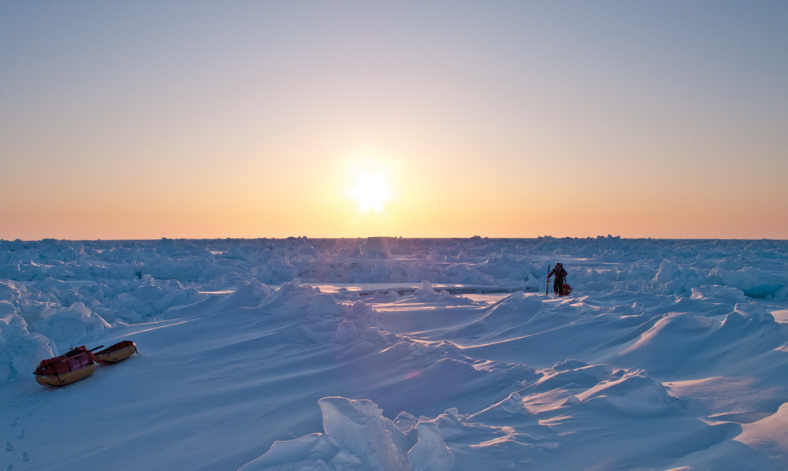

New Land 2013 Expedition / Photo by Kyle O'Donoghue
Wild Thing
From the North Pole to Northwestern, John Huston explores every direction.
By Hannah Johnson
In the bone-chilling temperatures and eerie isolation of the North Pole, John Huston is in his happy place. The sound of wind whipping against his face and skis trudging through the snow leaves Huston alone with his thoughts, able to concentrate solely on the journey. While the trek is treacherous, underneath all of his layers, a huge smile is plastered on Huston’s face.
“I think that is what’s fun and interesting about life, pushing myself outside my comfort zone to experience new and different things,” Huston says. “Otherwise I would get bored and not [be] living to my full capacity.”
“I really enjoy putting a challenge and a goal out in front of myself and seeing what kind of journey it takes me on.” – John Huston
Huston’s courage and sense of adventure have taken him everywhere from the North Pole to the South Pole, and now back to his alma mater, Northwestern.
After many of his own successful expeditions, Huston now helps students explore their own paths through Project Wildcat, or P-Wild, a pre-orientation program he helped launch during his own undergraduate career at Northwestern.
For a world-famous explorer, Huston is unfazed by his success. A thoughtful and serious speaker, he fondly tells stories of his adventures, always reflecting on the important values he learned along the way. He’s so humble that he’s embarassed to call himself such.
“I can’t call myself that, can I?” he says as he laughs.
His journey began when he was a curious and adventurous child with big dreams.
“I wanted to be Indiana Jones,” Huston says. “I even dug up the backyard, making my own archeological digs.”
Huston’s drive to explore guided him through his time at Northwestern, where he majored in history and anthropology, with a focus on archaeology. In addition to working in many archaeological digs through the Anthropology department, Huston also participated in the first P-Wild trip in 1995 and helped make the program what it is today.
It was his own experience on Project Wildcat that inspired Huston to pursue a career in wilderness education.
“Combining teaching and learning and leading and all the wonderful things of outdoor education, I was just totally hooked,” he says.
After graduating in 1999, Huston worked for five years at Outward Bound, a wilderness leadership program in Ely, Minnesota, where he found his passion for wilderness education and dog sledding. Connections through the program also helped further propel Huston’s dream to explore the world.
In 2005, Huston was the only American chosen to join an all-Norwegian team restaging famed explorer Roald Amundsen’s race to the South Pole.
“I got to go into the pages of my favorite books real time,” Huston says.
To relive the experience of Amundsen, who Huston considers one of his “biggest beacons,” the team used only the food, clothes, equipment and 48 sled dogs matching the 1911 expedition. The 72-day, 1,400-mile expedition through Greenland, which Huston completed by dog sledding and skiing, was filmed by BBC and the History channel.
For Huston, his incredible South Pole expedition was just the tip of the iceberg in terms of the all the goals he wanted to accomplish.
“I really enjoy putting a challenge and a goal out in front of myself and seeing what kind of journey it takes me on,” Huston says.
Following the Amundsen excursion, Huston was an expedition manager for an educational trek in Baffin Island, Canada, in 2007 and an expedition leader on a South Pole trip later that year.
All of these trips led up to Huston’s most well-known and challenging trips to date: an unsupported quest to the North Pole.

North Pole Expedition / Courtesy of John Huston
In 2009, he completed the first American unsupported expedition to the North Pole with expedition partner Tyler Fish. Huston calls this trip, which was 100 percent human powered and had no resupplies, “probably the hardest trip that I will ever do.”
As the intense 55-day ski trip pushed him to his limits, Huston says he felt proud and accomplished, not to mention exhausted upon completion.
“We just wanted to take a nap,” Huston says of the trip. “It was a huge relief to get there because of all the work and pressure we had to make our deadline and how much exertion, physical and mental exertion, it took to get to the North Pole unsupported.”
While most would be happy never to go on an expedition again after this feat, the ever-ambitious Huston aspired to explore more.
Most recently in 2013, Huston’s exploration of Canada’s remote Ellesmere Island was filmed for a documentary that premiered in Norway and Europe. While Huston doesn’t have any excursions scheduled soon, he went to Norway in October to meet with some expedition colleagues about planning some future trips.
“I’m a dreamer,” Huston says. “I’m always thinking of new things to do or different ways to do things.”
Though Huston has a love for exploration, he’s also passionate about helping other people find their inner explorer. He’s a motivational speaker, wilderness safety and logistics consultant and involved with Chicago Voyageurs, a mentorship and wilderness program for at-risk youth.
Student leaders get to know Huston as more than a wilderness expert, but also as a laid-back, fun-loving guy.
“I love working with young people who are motivated and passionate about what they’re pursuing,” Huston says. “So if I can add a little bit of my experience to their journey, then that feels really good to do that.”
This outreach also brought Huston back to Northwestern to one of his most rewarding experiences as an explorer.
After orchestrating a safety review for P-Wild, which celebrated its 20th anniversary this year, Huston soon joined the program as safety advisor in 2011.
He serves alongside five to six student leaders on the P-Wild Steering Committee, which essentially plans all aspects of the weeklong camping trip on the Superior Hiking Trail in northern Minnesota.
Members of the Steering Committee get to know Huston beyond his identity as a wilderness expert, but also as a laidback, fun-loving guy.
“John is just such an interesting character,” says senior Steffi Brock-Wilson, a 2015 Steering Committee member. “He can be very comical, it’s very fun.”
While he often quotes his favorite movies, talks about his dogs and brings students spiced popcorn to munch on, Huston also always gives valuable advice and tips for camper safety.
“Working with John is great because he has so much experience and really holds the safety of the trip in high esteem,” says senior Lucy Blumberg, a 2014 Steering Committee member.
Huston takes the time to hold feedback sessions with campers to find the right balance between safety and fun.
“A lot of the time he knows answers but he lets us talk through solutions,” Brock-Wilson says. “I really value that he let us always come up with our own solution.”
For Huston, returning to the school where his career in exploration began makes his work with P-Wild all the more rewarding.
“My undergraduate time at Northwestern was one of the highlights of my life,” Huston says. “To go back on campus and reconnect with students and the administrators who support the students has been a thrill.”